First National River to be designated in the United States, popular for camping, hiking, canoeing, and fishing
General Information
How to Get There
From Little Rock (95 mi): Take I-40 W to US-65 N at Conway, then follow US-65 N through Clinton and Marshall to the Tyler Bend Visitor Center.
Overview
Buffalo National River in northern Arkansas was the first river in the country to be designated a National River, established by Congress in 1972 to keep it free of dams. The Buffalo flows for 153 miles from the Boston Mountains of the Ozarks across the Salem Plateau to join the White River, passing towering limestone and sandstone bluffs, caves, waterfalls, and hardwood forest. It is also home to the state’s only elk herd, which was reintroduced in the early 1980s. Visitors come to float, camp, hike, fish, and photograph one of the most scenic and least developed rivers in the central United States.
Access
The park is long and narrow, with three districts (upper, middle, and lower) reached from different highways. The upper district around Ponca and Boxley Valley is reached by AR-43 and AR-74, the middle district around Tyler Bend by US-65 near St. Joe, and the lower district around Buffalo Point by AR-14 near Yellville. Harrison, about 28 miles from the park, is the nearest larger town, and Little Rock is roughly a 2-hour drive. Cell service is limited in many areas, and many roads are winding and narrow. Most visitors drive, and canoe and shuttle services operate from independent outfitters.
Seasons
The float season depends on rainfall because the Buffalo is fed mainly by rain rather than springs. High water in spring, typically March through early June, is best for canoeing and whitewater kayaking on the upper river, and waterfalls such as Hemmed-in Hollow run at their fullest then. Summer is hot and humid and the river can run low, especially in the upper stretches, but the lower river still offers floating and swimming. Fall brings colorful Ozark foliage and the elk rut around September and October, and Boxley Valley near Ponca is a good place to see elk early or late in the day. Winter is quiet, with ice possible on trails and bluffs.
Things to Do
Float the Buffalo River
Buffalo National River was the first national river designated in the United States and is famous for its clear waters, towering bluffs, and scenic beauty. Visitors can enjoy canoeing, kayaking, rafting, and floating through some of the most spectacular landscapes in the Ozarks while experiencing the river's free-flowing character.
Visit Historic Sites and Scenic Landmarks
The park contains numerous historic structures, including the preserved Rush Historic District and several pioneer homesteads. Visitors can also explore iconic natural landmarks such as Big Bluff, Hemmed-In Hollow Falls, and the many limestone bluffs that line the river corridor.
Experience Wildlife Viewing and Camping
Buffalo National River offers outstanding opportunities for wildlife viewing, hiking, camping, fishing, and photography. Elk are frequently observed in the Ponca and Boxley Valley areas, while the park's forests, rivers, and meadows support a wide variety of birds and other wildlife.
Top Trails
Lost Valley Trail
Length: Approximately 2.3 miles round trip
Elevation Gain: Approximately 300 feet
Difficulty: Easy to Moderate
One of the park's most popular hikes, Lost Valley Trail follows Clark Creek through a lush valley featuring waterfalls, natural bridges, caves, large bluff shelters, and beautiful Ozark scenery.
Big Bluff (Goat Trail)
Length: Approximately 6.0 miles round trip
Elevation Gain: Approximately 1,000 feet
Difficulty: Moderate to Strenuous
This iconic trail leads to Big Bluff, one of the tallest bluffs between the Rocky and Appalachian Mountains. The trail rewards hikers with spectacular panoramic views overlooking the Buffalo River far below.
Visitor Centers
Tyler Bend Visitor Center, in the middle district off US-65 near St. Joe, is the park’s main visitor center, with exhibits, maps, and information on floating, camping, and hiking. Ranger stations serve other parts of the river, including the Buffalo Point area in the lower district and the Ponca area in the upper district, where an education center focuses on the park’s elk. Park headquarters is in Harrison. Hours and seasonal staffing vary, so check with the National Park Service before visiting.
Camping and Lodging
The National Park Service operates a number of campgrounds along the river, including Tyler Bend, Buffalo Point, Lost Valley, and Steel Creek, along with primitive riverside sites. Cabins, lodges, and outfitters are found in and around Ponca, Jasper, and Boxley Valley. For hotels, Harrison, about 28 miles away, has the widest selection, and smaller towns such as Jasper, Marshall, and Yellville have motels and cabin rentals. Eureka Springs and Mountain View, each within about two hours, offer additional lodging.
Sources: National Park Service official Buffalo National River information, including river recreation, historic sites, wildlife viewing, camping opportunities, and visitor resources. https://www.nps.gov/buff/index.htm Additional trail, floating, and visitor information verified through National Park Service hiking resources and planning guides. https://www.nps.gov/buff/planyourvisit/hiking.htm https://www.nps.gov/buff/planyourvisit/index.htm
This article uses material from the Wikipedia article "Buffalo National River", which is released under the Creative Commons Attribution-Share-Alike License 3.0
This article uses material from nps.gov "Buffalo National River"
Featured Trails
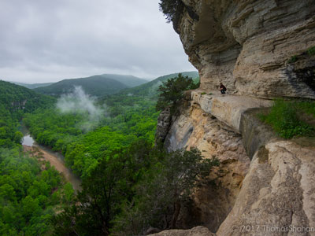
Mattsrealm, CC BY-SA 4.0, via Wikimedia Commons; Image Size Adjusted
Centerpoint Trail (Big Bluff)
Strenuous hike that traverses the Ponca Wilderness, winding down an old wagon road descending nearly 1,300 ft. to the Buffalo River
-400.jpg)
English: NPS, Public domain, via Wikimedia Commons; Image Size Adjusted
.JPG){kind=link}
Hemmed In Hollow Falls
Strenuous wilderness trail leading through steep Ozark terrain to a towering seasonal waterfall that drops nearly 210 feet from a sandstone bluff.
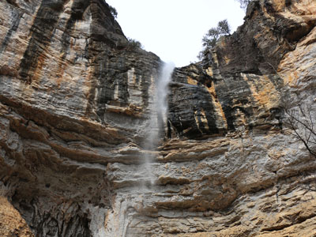
English: NPS, Public domain, via Wikimedia Commons; Image Size Adjusted
Indian Rockhouse
A rugged backcountry trail leading to a massive prehistoric bluff shelter, passing waterfalls, sinkholes, sculpted bedrock, creek corridors, and other distinctive geological features.
Lost Valley Trail
0.8 miles, 40 feetEasy to moderate hike through a box canyon sculpted by Clark Creek
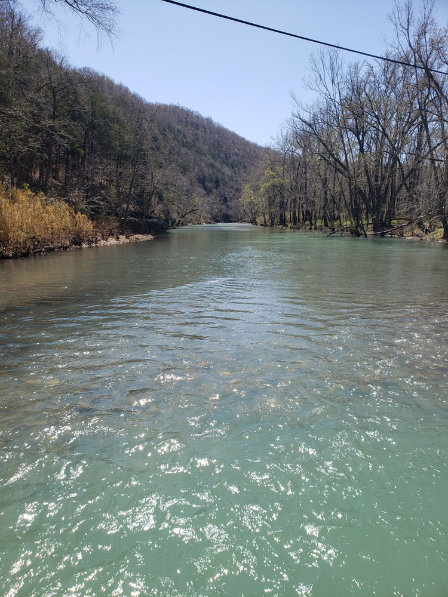
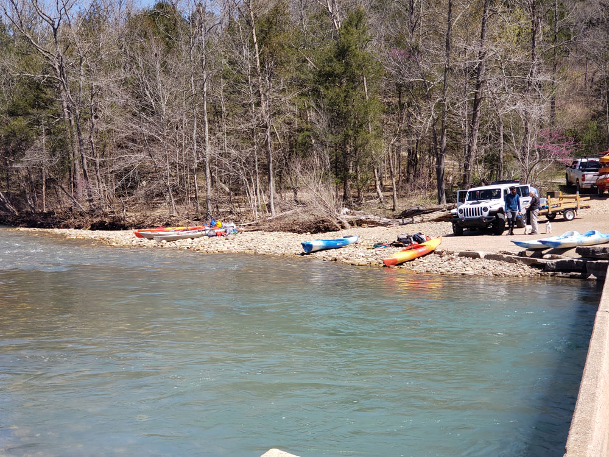
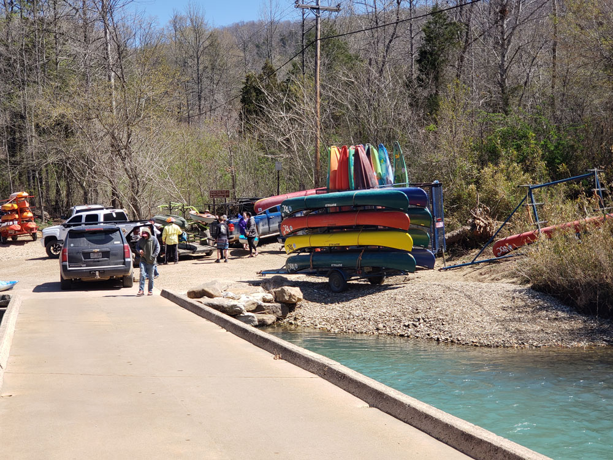
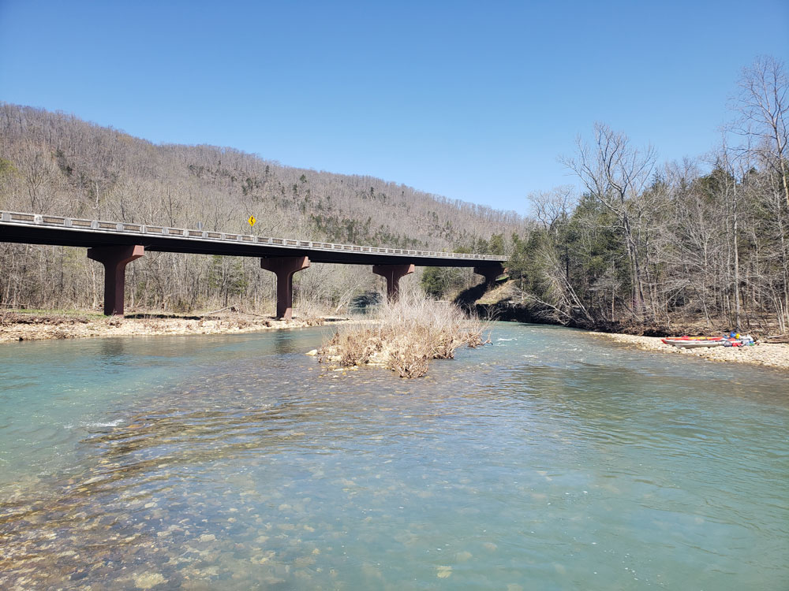
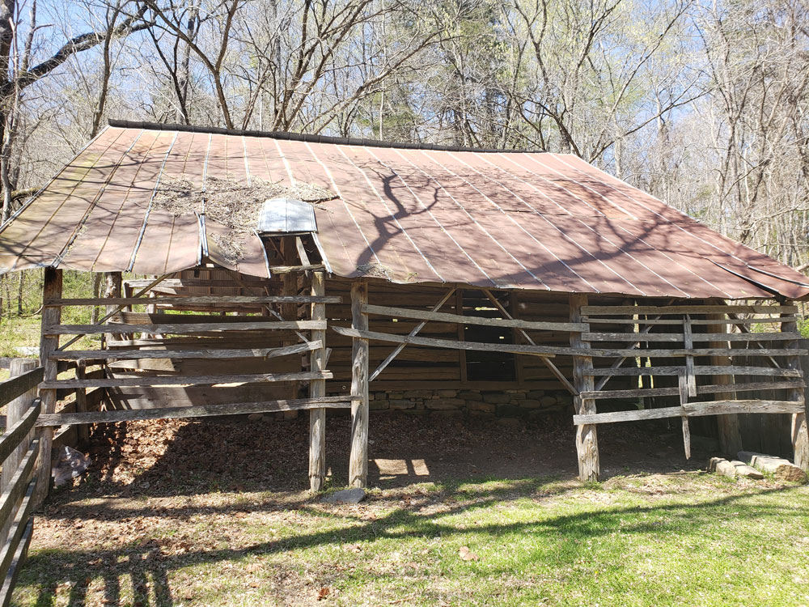
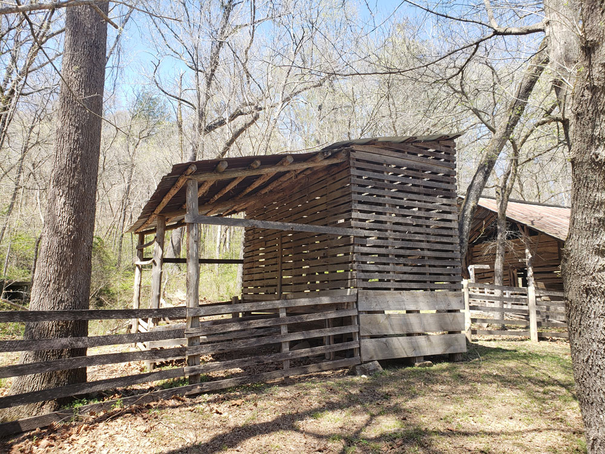
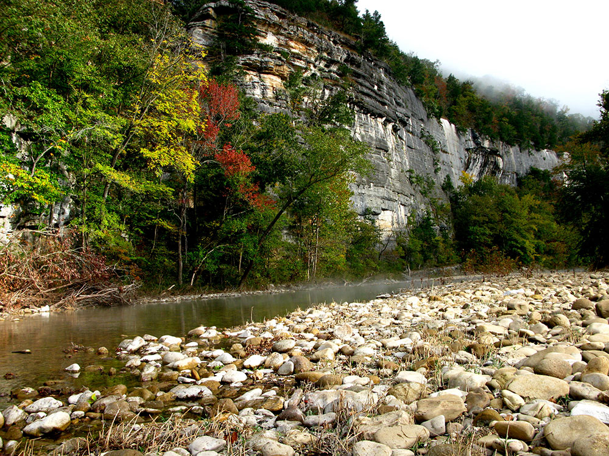

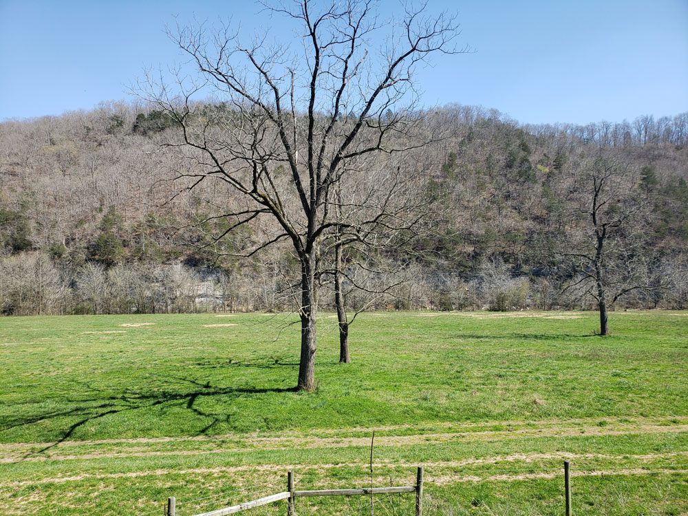
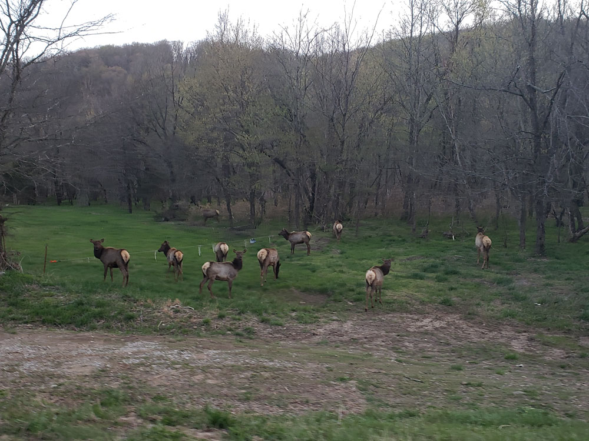
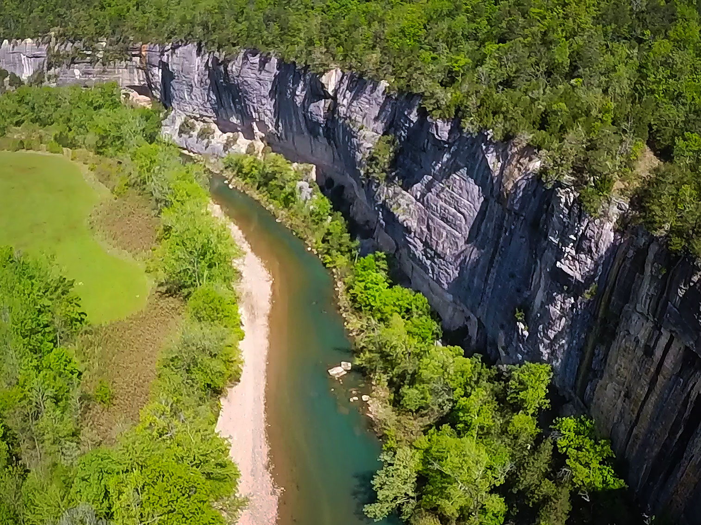